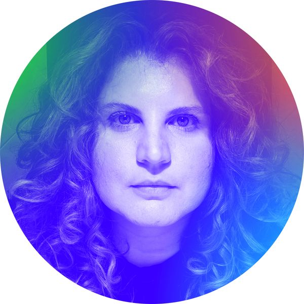

Isabella Barroso - Ethical Technologist
Hello ➝ Twitter / Linkedin
Isa is primarily an Ethical Technologist. Additionally, she is a Brazilian journalist, independent researcher, translator, and Product Manager (ex-Thoughtworker) with a decade of experience and a background in interaction design.
She has managed multiple distributed agile teams in different business contexts. As well as worked in the tech industry and the international non-profit sector as Program Manager for Latin America and the Caribbean (Meedan).
Her focus revolves around providing support for regional and cross-regional initiatives that aim to structure and amplify social impact at the intersection of information, society, technology, and feminist communities in Abya Yala.
Other Work:
Training/Workshops
Digital Witch Hunting - Digital Security Training for Brazillian Actvists
training designed for journalists and actvists as a response during the Brazillian coup and maintained updated during the Bolsonaro governament.
2023
Translator
The Agribusiness Pact in Brazil
for Phenomenal World, recommended reading by Financial Times
Fellow
Collective Action School second cohort
Co-creator
RightsCon 2023: Workshop “Radical Reimagining: designing for dissident bodies a harassment free experience in encrypted spaces”
2022
Writer/Researcher
"We Are Not Safe:" Platform Censorship And Trauma
published by Futuress as a Fellow for the Code Resistance cohort, work selected for the "The Social Life of Algorithmic Harms" workshop at Data & Society
Editor/Creator
Podcast Guardiãs da Resistência (Guardians of The Resistance)
2021
Writer/Researcher
Colombians 'save the evidence' as they denounce social media censorship of protests
published by Global Voices
2020
Organizer and Facilitator